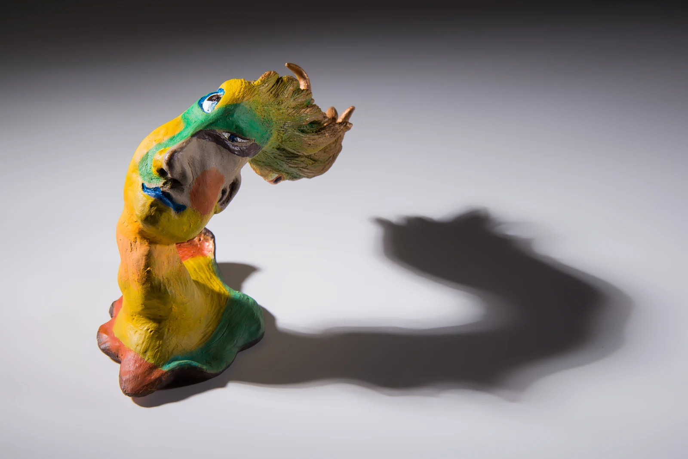
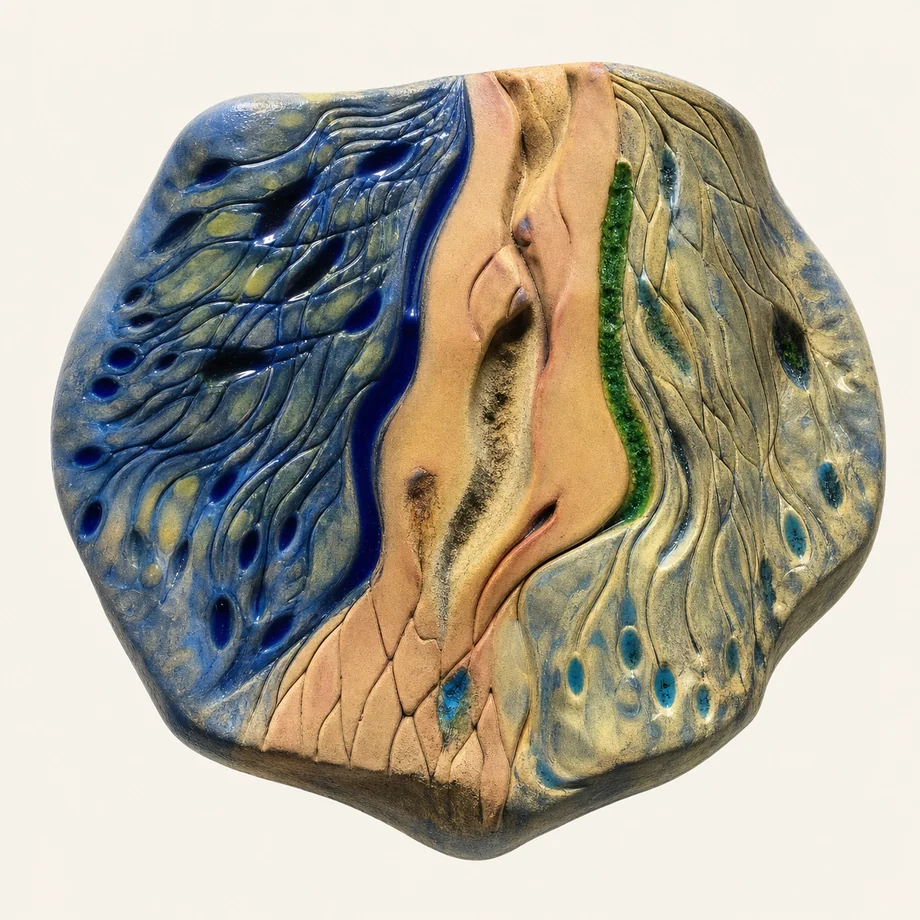
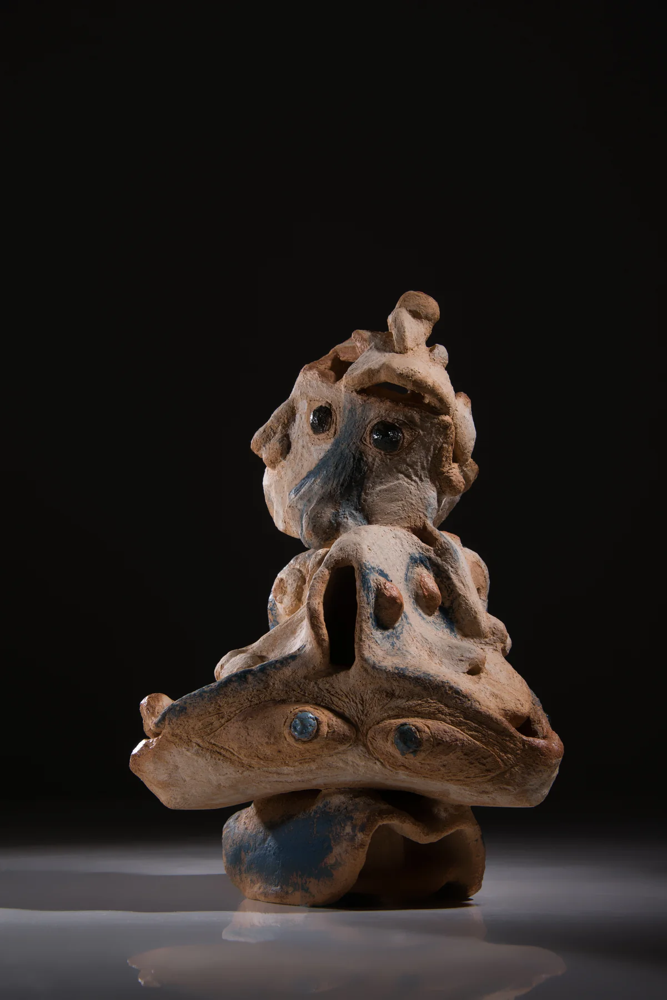
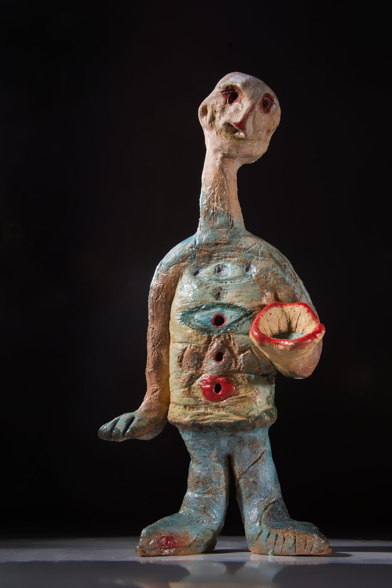

陶之始 Clay Origin
陶土最初靠近生命形貌的起點 The first clay gestures toward living form.
在視與不視之間，生成自己的宇宙 Generating my own universe between seeing and not seeing
藍、橘紅與深灰在黑色星空中相互凝視，裂縫成為宇宙生成的入口 Blue, ember, and deep gray gaze at one another in a black field of stars, while the rift becomes the entrance where a universe begins to form.
01 / 關於又禎 About Yuzen
我的創作並非單純再現眼前事物，而是來自於我與世界之間流動的感知關係。那些被看見的痕跡、裂縫、風景與生命，最終在陶土與線條之間，逐漸形成屬於自己的宇宙。 My work does not simply reproduce what stands before me. It arises from a moving relationship of perception between the world and myself. Traces, cracks, landscapes, and lives gradually form their own universe between clay and line.
每一件作品像一個正在形成的小宇宙，保存著觀看、觸摸與想像交會後留下的痕跡。 Each work is a small universe in formation, preserving the traces left where seeing, touch, and imagination meet.

創作起點 Beginning
第一個從陶土中甦醒的樹精昂首而立，像自然靈魂初次現身，也開啟了 Yuzen Universe 的生命語彙。
Tree Spirit's Pride The first spirit awakening from clay stands with its head lifted, marking the beginning of Yuzen Universe and its living language of eyes, faces, nature, and soul.
創作者 Artist
我的創作發生在「視與不視之間」。
以世界留下的痕跡作為起點，
在看見與想像之間，
讓尚未存在的生命逐漸生成。
My work happens between seeing and not-yet-seeing. Beginning with traces left by the world, I let lives not yet existing gradually emerge between perception and imagination.
鄭又禎，畢業於國立清華大學藝術與設計學系研究所。從事室內設計三十餘年，持續投入陶藝、繪畫、木雕與多媒材創作。 Yuzen Cheng graduated from the Graduate Institute of Art and Design at National Tsing Hua University. With more than thirty years in interior design, she continues to work across ceramics, drawing, wood sculpture, and mixed media.
近年以「Yuzen Universe」為創作主軸，透過裂縫、殘片、石紋與人格生成，探索萬物有靈與生命顯影的可能。 In recent years, Yuzen Universe has become her central creative world, exploring cracks, fragments, stone textures, and generated personhood as ways for animism and hidden life to appear.
02 / 創作理念 Creative Concept

世界本來就是活的，也一直在互相變形。
The world has always been alive, and always transforming with itself.
我經常在石頭、樹木、海岸、舊牆與時間留下的痕跡裡，看見潛伏的生命。那些生命往往不是完整出現，而是透過裂縫、紋理與風化的痕跡慢慢顯影。
創作對我而言，不是創造，而是回應。
我只是將那些被看見的生命，輕輕記錄下來。
The world is alive by nature, and it is always transforming through relation. I often see hidden life in stones, trees, coastlines, old walls, and the traces left by time. That life rarely appears whole; it slowly reveals itself through cracks, textures, and weathered marks. For me, creation is not invention, but response. I simply record the lives that have been seen, gently.
03 / 作品系列 Work Series
系列一 Series 1
在世界留下的痕跡中，看見生命逐漸浮現。石頭、樹木、舊牆與海岸，不只是風景，而是生命變形與回望的場所。 Seeing life gradually emerge from the traces left by the world. Stones, trees, old walls, and coastlines are not only landscapes, but places where life transforms and looks back.


遠古的傳說：那些原本隱沒在石板紋理中的眼睛與面孔，像遠古傳說裡沉睡的眾生，在觀看中慢慢甦醒。 Ancient Legend: eyes and faces once hidden in the stone surface awaken slowly, like beings sleeping inside an ancient tale.
進入 Enter系列二 Series 2
文明不是被完整復原，而是在殘片、裂縫與時間的沉積中，重新長出生命的形態。 Civilization is not fully restored; within the sediments of fragments, cracks, and time, it grows again into forms of life.
系列三 Series 3
陶土不只是器皿，而是讓生命停駐的身體。眼睛、嘴巴與孔洞，在其中生成可以凝視與回應的小宇宙。 Clay is not only a vessel; it is a body where life may dwell. Eyes, mouths, and openings form small universes capable of gazing and answering.

心生相：一件由閉眼、凝視與張口交疊而成的生命容器，像內心深處長出的形相，把尚未說出的靈魂顯影出來。 Inner Form: a life vessel where closed eyes, gaze, and an open mouth overlap, revealing a soul that has not yet spoken.
進入 Enter系列四 Series 4
人格不是固定的面孔，而是在自我、角色與生命群像之間，一層層被挖掘出的內在地層。 Persona is not a fixed face, but an inner stratum excavated layer by layer through self, role, and gatherings of life.

來自視界之外：一個從視界之外走來的自我分身，帶著眼睛、孔洞與張開的口器接收世界，也向世界發出內在的聲音。 A persona arriving from beyond the field of vision, receiving the world while sending out an inner voice.
進入 Enter系列五 Series 5
當線條開始流動，生命便悄悄顯現 When lines begin to flow, life quietly appears.
04 / 早期創作 Early Works
早期創作像整個又禎宇宙最初的地層：陶土、紙面、木材與空間在這裡第一次彼此靠近。 The early works are the first strata of the Yuzen Universe: clay, paper, wood, and space first come close to one another here.
Early works form the first strata of Yuzen Universe, where clay, paper, wood, and space first came close.
陶土最初靠近生命形貌的起點 The first clay gestures toward living form.
線條與觀看剛開始生成的痕跡 The first traces of lines and seeing.
早期木雕、木質肌理與生命形象開始成形的源頭 The first wood forms and carved traces of life.
空間、牆面與設計經驗裡最初浮現的生命感 The first spatial traces where life began to appear.
05 / 短連結清單 Short Links
這些短連結可直接抵達作品所在段落，適合展覽分享、社群發布與作品介紹。 These short links lead directly to each work section, ideal for exhibitions, social sharing, and artwork introductions.
古文明的裂生 / 作品段落直達 Ancient Civilization Reborn Through Cracks / Direct work section
人格考古學 / 生命群像層 / 作品段落直達 Archaeology of Persona / Life Portraits Layer / Direct work section
06 / 聯絡資訊 Contact Info